Все компетенции
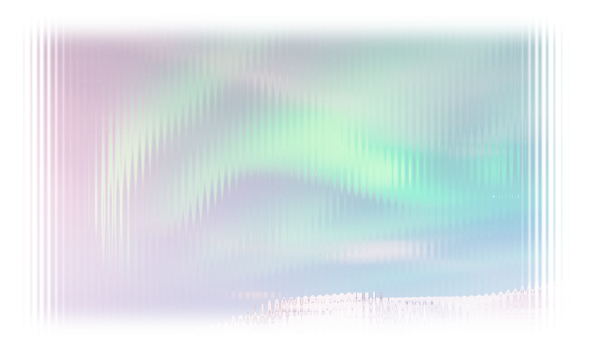
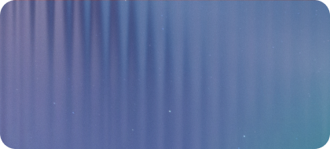
Стратегические сессии и круглые столы
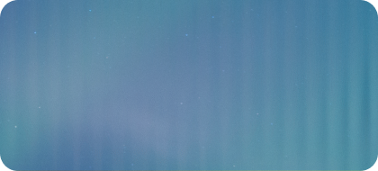
Стратегический аудит и разработка стратегий
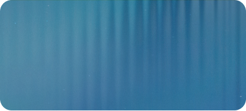
Этнологическая экспертиза
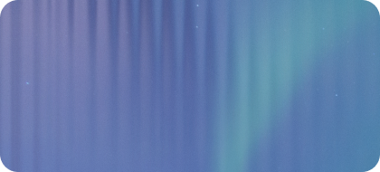
Проекты под ключ
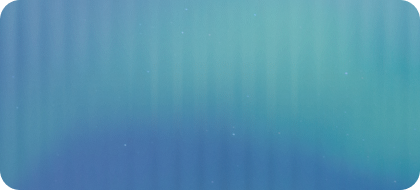
Рейтинги и индексы
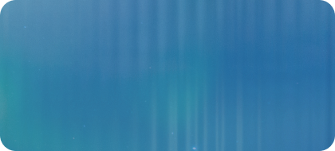
Исследования и аналитика
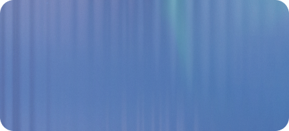
Социология
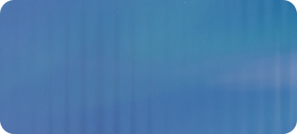
Просвещение
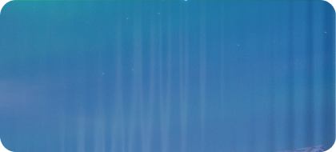
GR-консалтинг
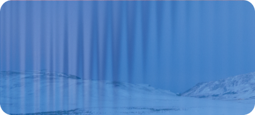
PR-консалтинг
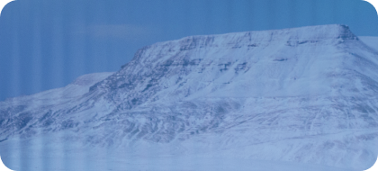
Организация мероприятий
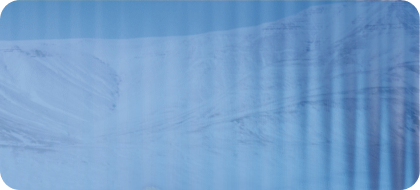
Медийные проекты